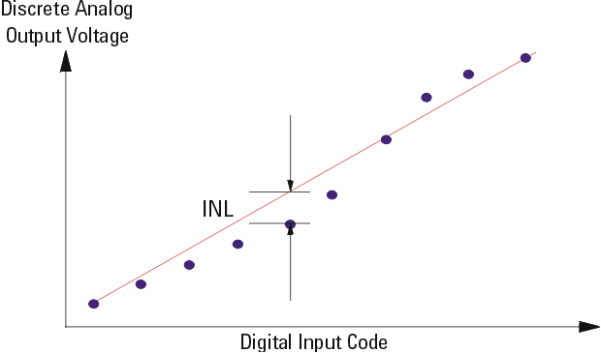
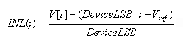
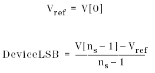
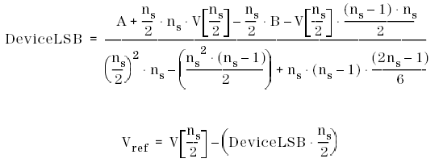
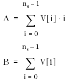
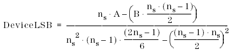
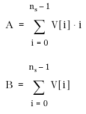
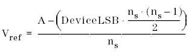

Integral Non-Linearity (INL)
INL is the deviation of the analog output from a straight line. The straight line can be drawn as a best-fit line or between the end points as shown below.

Integral Non-Linearity can be calculated using the endpoint method, zero-point method, or minimum root mean square method.
Basically, all three methods use the same formula. Only the definition of the DeviceLSB and Vref varies from method to method.
The following formula for INL calculation applies:

For the endpoint method the following DeviceLSB and Vref definitions applies:

For the zero-point method the following DeviceLSB and Vref definitions applies:

with A and B defined as follows:

For the minimum root mean square method the following DeviceLSB and Vref definitions applies:

with A and B defined as follows:

and Vref defined as:
